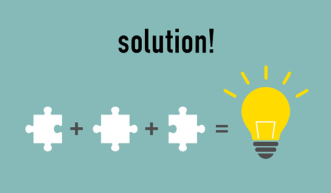
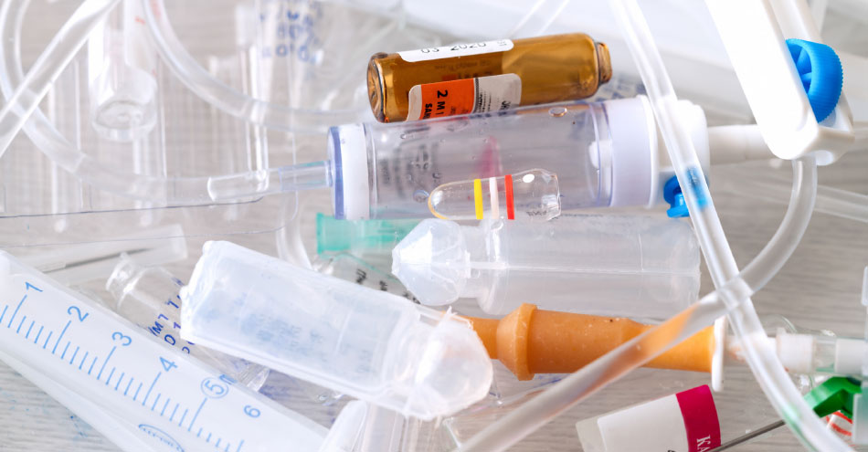

- Raw material substitution: switching to less hazardous materials
- Process modification: changing the production process to improve efficiency and reduce the use of toxic substances
- Equipment upgrade: installing more efficient equipment to reduce raw material consumption and produce less waste.
- Product redesign: reducing certain raw materials in products or packaging, or improving manufacturability.
-
MORE ARTICLES
-  Solutions
-  Medical Waste
- Biotechnology
-
 Oceans
Oceans
-
 E-Waste
E-Waste
To reduce our necessities is the biggest concern as it accumulates pollution. Pollution has many forms, the water that we drink to the sound that we hear can be considered as some aspects that contribute to environmental pollution which would, in turn, lead to health hazards, adverse effect on ecosystem and wildlife. Pollution can be stated as the introduction of harmful substances or any foreign particles that would have a bad effect on the environment.
For years, environmental protection has focused on pollution control - cleaning up the pollution after it occurred--rather than on prevention. The control approach has serious drawbacks, including high costs and increased liability. And when we try to clean up pollution, sometimes we just end up moving the pollutant from one place to another, such as from the air to the land or from the land to water.
Many businesses, both large and small, are operated differently by thinking prevention rather than control. Pollution prevention practices can include changes in design, raw materials, production processes, and delivery of a product. These practices include: